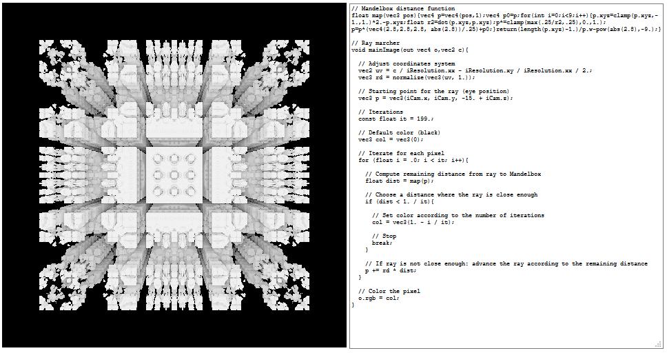
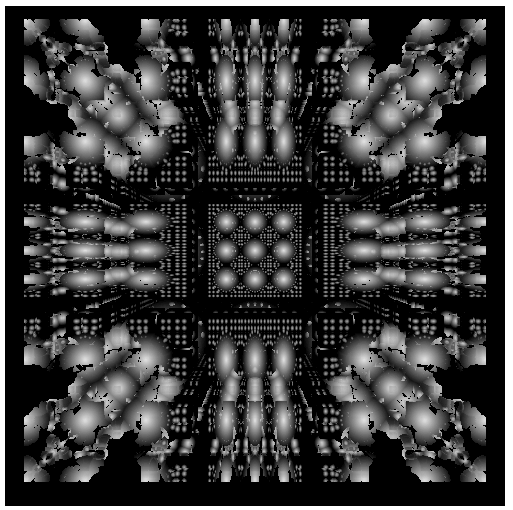
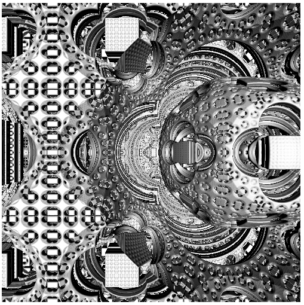
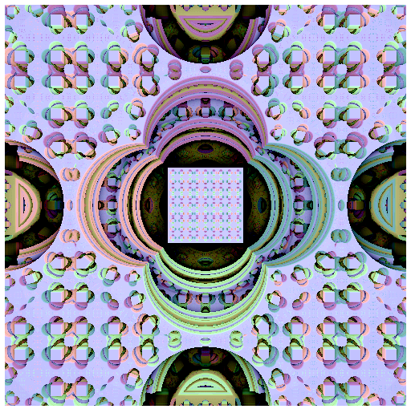
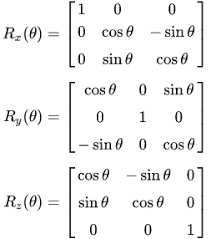

JS1K 2019
march 2018 - march 2019
This 10th edition of JS1K was so important, it was announced one year in advance with the theme "X".
To respect the theme, I didn't really do a "X" entry, but I did X (ten) entries! All of them are in this Github repo.
5 of them were made before the official compo start (febuary 1), the 5 others were done during the two following months.
Here they are by order of submission, with all their development tricks and anecdotes.
The commented source codes of each demo is super detailed too, so it's recommended to read them along this post!

1) Emojysics
Tricks and anecdotes- Right after JS13Kgames 2018, I started looking for tiny 2D physic engines in JS, and wanted to understand how they work.
I found many interesting libs with different featuresets:
Planck (43kb zipped), Matter.js (22kb zipped), PhysicsJS (11/23kb), JPE (10kb zipped), Verlet (3.4kb zipped)...
But they were too big for me and their source code was hard to understand without a strong theoric background.
I first found this tutorial, that was unfortunately very incomplete and buggy, but at least it started explaining something.
Then I went to look if a book existed, and the best (only) result was: Building a 2D Game Physics Engine Using HTML5 and JS.
It had an affordable PDF version and a Github repo with a pretty convincing demo.
I read the pdf and managed to summarize it in 9 handwritten pages on a tiny notepad.
The more I understood the subject, the more I realized that the book contained a lot of typos, mistakes, contradictions, bad practices, and that it only scratched the surface, by only explaining the less accurate algorithms with very few details (especially at the end, with friction and restitution parts), while being extremely verbose on other points like setting up the IDE and creating JS files.
Mini JS 2D physics engine, continued!
— xem (@MaximeEuziere) 11 janvier 2019
So I read this nice book: https://t.co/ukEUQBplhG
and analyzed the book's demo: https://t.co/jUjnveVOZH
This 2D engine represents:
- 1162 lines of code
- 39kb of code
- 11.7kb minified
- 3.4kb zipped
#screenshotsaturday #js13k #wip pic.twitter.com/f3UZVX6sRY
But at least, it explained things better than any other tutorial.
Then, I looked at their source code on Github and was shocked with the unnecessary complexity and antipatterns everywhere, plus the lack of useful comments almost everywhere.
I did some stats:
After Codegolfctober 2018 where we golfed a 2D vector library in 264 bytes (or 236 bytes RegPacked)...
...I decided to take their code and remove every line that could be removed, and clean up/comment/golf every line that remainedV=(x,y)=>({x,y}) // vec2(x,y) l=v=>d(v,v)**.5 // length(v) a=(v,w)=>V(v.x+w.x,v.y+w.y) // add(v,w) s=(v,w)=>a(v,m(w,-1)) // sub(v,w) m=(v,n)=>V(v.x*n,v.y*n) // mul(v,n) t=(v,w)=>l(s(v,w)) // dist(v,w) d=(v,w)=>v.x*w.x+v.y*w.y // dotproduct(v,w) c=(v,w)=>v.x*w.y-v.y*w.x // crossproduct(v,w) r=(v,o,t)=>a(o,V(c(f=s(v,o),g=V(Math.sin(t),Math.cos(t))),d(f,g))) // rotate(v,origin,theta) n=v=>m(v,1/(l(v)||1)) // normalize(v)
The demo is HERE, the commented source code is HERE and the minified code is HERE.This code contains tons of useless complexity, like tmp vars used only once, and excessive OOP
— xem (@MaximeEuziere) 11 janvier 2019
I rewrote it clean, while preserving all the physics features:https://t.co/9QeyY3vekV
- 518 lines of code
- 15.6kb
- 4.13kb minified
- 1.97kb zipped!#screenshotsaturday #js13k #wip pic.twitter.com/l7Q2iRGvEINew mini 2D physics engine update:
— xem (@MaximeEuziere) 13 janvier 2019
Minified: 2.69kb
Zipped: 1.45kb!
Demo: https://t.co/9QeyY3vekV#screenshotsaturday+1 #js13k #wip pic.twitter.com/NCeRWFyMHL - Then, came the time to start working on a js1k entry. Obviously, a 2D lib that fits in 1.45kb zipped can't fit in a 1kb demo, it needed to be reduced.
After many attempts, I realized that the rectangles had to be removed, so my goal would be a circle-only entry.
I trimmed every line of code that was related to rectangles, and the minified code reached about 2kb.
I simplified many aspects of the simulation, like giving every circle the same restitution (bounciness) and friction: 0.5; or using the same (random) value for radius, mass and inertia.
I removed every test that is normally used to optimize the simulation, like testing if the bounding circles intersect and if the shapes move towards each other before computing their collision and updating the scene in consequence.
Finally, I removed an "important" loop that made the collision-solving algorithm run 15 times at every frame in order to ensure that no shapes are still intersecting when the scene is drawn.
Instead, I replaced the loops that consider every pair of circles once:
With loops that consider every pair twice:for(k = 15; k--;){ for(i = objects.length; i--;){ for(j = objects.length; j-- > i;){ ... } } }
This allowed to enhance the simulation precision (as if it was run twice at each frame) and save bytes at the same time.for(i = objects.length; i--;){ for(j = objects.length; j--;){ ... } } - Speaking of loops, when the code contained
, I noticed that Terser minified it asj-- > i
whilej-- >i
would have been perfectly valid, even though it can be interpreted as an end of HTML comment in some weird situations.j-->i
I also noticed that no matter how many "top-level" options I enabled, Terser didn't want to rewrite any global variable as one char.
So I added a bunch of tricks in my online Terser minifier to fix these cases if the "js1k" option is checked:Terser-online (#ES6 minifier) update!https://t.co/srj6BBtZmF
— xem ??? (@MaximeEuziere) 31 d?cembre 2018
- Extra compression can now be toggled with a checkbox
- Output size and RegPack options are placed below the output
Here's a 4.6kb app minified in 1800b, then 1434b extra minified, then packed in 1023b#js1k #js13k pic.twitter.com/NBv4UhuA5OFYI, extra minification (on top of Terser's strongest compression) includes:
— xem ??? (@MaximeEuziere) 31 d?cembre 2018
- Renaming global vars names as 1 char (they need to be declared with "var" though)
- Remove the space in "i-- >j"
- Remove leading "var" & trailing semicolon
(remaining "var"s must be cleaned manually) pic.twitter.com/5pgRbYK6Hw - When I tried to pack this "big" demo, RegPack was crashing, which lead to this bugfix.
- After managing to golf it below 950 bytes, I decided to use circular emoji (faces) instead of circles. Of course, it didn't work as planned. I used trial-and-error to determine the right font-size and X/Y offsets to make an emoji appear exactly where a circle would have been drawn.
- On Apple devices, the rotated emoji were too buggy, so with the help of Twitter I found a tiny test (
) that allowed me to detect them and fallback to regular circles.navigator.userAgent.match("Ma") - The emoji (picked randomly) are in the range U+1F600 - U+1F644 (😀😁😂😃😄😅😆😇😈😉😊😋😌😍😎😏😐😑😒😓😔😕😖😗😘😙😚😛😜😝😞😟😠😡😢😣😤😥😦😧😨😩😪😫😬😭😮😯😰😱😲😳😴😵😶😷😸😹😺😻😼😽😾😿🙀🙁🙂🙃🙄)

2) SMB 1-1k
Tricks and anecdotes- This demo is a "challenge accepted" from Twitter!
So, it's surprisingly hard to make a platformer in 1kb of JavaScript. Here's my best effort https://t.co/3ba7x99fLb#js1k #wastingmylife pic.twitter.com/ZqFMtNLC20
— Chris Glover (@mad_maw) 9 novembre 2018Challenge accepted!
— xem 🔵 (@MaximeEuziere) 10 novembre 2018
Here's a quick draft (~700b)https://t.co/gZaUi4gYST
PS: could you allow arrow keys or ZQSD controls? not everyone has QWERTY keyboards ;) pic.twitter.com/XZTUpBq1XENew #js1k prototype: SMB 1-1 demake
— xem 🔵 (@MaximeEuziere) 17 novembre 2018
Currently 1206b
Includes map, scroll, gravity, question/brick blocks, death pits & flag victory (not working on codepen)
Todo: enemies, clouds, mountains, castle, explorable pipe, music, UI?https://t.co/CRgtBWLur2#screenshotsunday #gamedev pic.twitter.com/j9H1z7cvLF - When I saw that mad_maw said it was hard to make a platform engine in 1kb, I realized I had never tried golfing one before, so I hacked a little demo in a couple hours.
In about 700 bytes, it had a fixed map, a character that could walk and jump, and collisions in every direction.
After that, I thought it would be fun to add scrolling and destructible blocks and pipes and holes to make a demo that looked a bit like the beginning of Super Mario Bros.
It worked so well that I finally decided to put the entire SMB 1-1 map in the demo, whatever it takes! (Spoiler: it took 1206 bytes)
Here's a PLAYABLE DEMO. - I used this grid as a guide for the map.

I analyzed this map a lot and realized that there were 3 holes, 6 pipes, 7 stairs (5 to the left, 2 to the right) and interactive blocks scattered on lines 4 and 8.
So I wrote a pipe generator and a stair generator, then placed everything on a 211 x 15px grid.
The way interactive blocks work is interesting, and detailed in the collision function. - After golfing it as hard as I could, and seeing that it would never fit in 1kb, I made a difficult decision: downgrade the graphics of the game.
No more borders, no more bricks, no more arms, legs and cap for Mario, every item of the game had to be reduced to a single pixel instead of a 16x16px block.
As a compensation, having Mario being just one pixel not only saved a lot of bytes in the drawing phase, but also simplified a lot the collisions tests:
Indeed, when everything around him is aligned on a pixel grid, every time I had to test/resolve a collision, I just had to floor or ceil Mario's X or Y coordinates. - Of course, when Mario walks and jumps, his X and Y positions at each frame are computed in subpixels. Same thing for the Gomba enemy at the beginning.
- Speaking of the enemy, the collision between Mario and him is tested at every frame using Math.hypot.
If the distance is smaller than 1px, Mario dies if he's on the ground, or kills it if he's in the air.
To save bytes the enemy is not "really" killed, it's just moved at x = -1 so we don't see it anymore. - Finally, a lot of manual edits were necessary to make the minified code optimal for RegPack, as explained here.

3) MiniSynth
Tricks and anecdotes- I made a lot of sound / music tools for JS13k but wasn't satisfied by how the notes sounded (mostly "beeps"), so I finally started researching how to synthesize notes that actually sounded like real instruments in JS.
- Of course, it's a super difficult thing to do, and often requires a lot of code. So I tried to look what solutions already existed.
- There's Sonant-x, which has a complex UI but outputs songs that can be used in 13kb games.
And there's audiosynth which produces convincing piano and guitar notes, despite its unreadable source code.
It has a cool DEMO though! - I decided to take the complicated source code of audiosynth, and like I did for Emojysics, remove every line of code that wasn't necessary to play a given piano note or a given guitar note, and clean up the remaining lines. The result was impressively small (less than 512 bytes for each synth, instead of 11.3kb for the original lib)
New mini project + #js1k entry + #js13k tool!https://t.co/MKkz5lWKZn
— xem 🔵 (@MaximeEuziere) 8 décembre 2018
A piano synth function in less than 512b
+ a piano UI in less than 512b
= a 993b piano toy, inspired by https://t.co/FHq10NF7dT
Thanks to @kchplr @ryanmalm @p01 @innovati @d_nghia !#screenshotsaturday pic.twitter.com/U221GBnArmGolfed MiniPiano note generator/player from 503 to 422 bytes.
— xem 🔵 (@MaximeEuziere) 26 décembre 2018
Demo: https://t.co/ghB8ZrCRPV
Added MiniGuitar (also inspired by audiosynth.js), golfed in 483b!
Demo: https://t.co/FqpOfEXwxY
Let's put them both in 1kb!#js1k #js13kgames pic.twitter.com/IiFVVgccXe - So naturally, I thought I could merge the two synths with an unified UI and make a JS1K entry out of it.
It worked pretty well, as I managed to fit it in 1023b on the first try, and 950b with a lot of extra golfing. - I submitted it to js1k mid-febuary, but no luck: the demo, once published on js1k.com/4052, didn't play any sound.
The problem was that js1k's shim didn't like the way I generated and played the notes, and I found no way to fix it...
Then it hit me! With the 74 free bytes I had, I could put all my app inside an iframe, which would bypass completely all the shim's fixes and polyfills that made my app mute.
By chance, it worked and fitted exactly in 1024 bytes. We can see the borders of the iframe, but... who cares?// Before n=n=>{...(synth)...},b.innerHTML=`...(ui)...` // After b.innerHTML="<iframe width=999 height=999 srcdoc=\"<body id=b><script>n=n=>{...(synth)...};b.innerHTML=`...(ui)...`<\/script>\"></iframe>"
Hi, sorry if you only see a mute demo! it was supposed to play notes for real.
— xem 🔵 (@MaximeEuziere) 14 février 2019
While we fix it, you can test it out of JS1K here:https://t.co/WtQhVvI2Lv
Cheers!Guys, BTW, the MiniSynth demo was updated here, and it now plays sound correctly!https://t.co/2tvYHbqxwt
— xem 🔵 (@MaximeEuziere) 22 février 2019 - As for the piano and guitar synthesizing itself, the most interesting part of the app in a way, I can't tell much about it because I still see it as black magic... though, I described it the best I could in the commented source code.
As far as I can tell, the piano is simulated by an addition of different frequencies with lower and lower volumes for each "sub-frequency", and the guitar is simulated by accumulating a random noise in a variable after each sample generation and using this variable in the computation of the next sample.
Also, to have a more natural feeling, each note is made of two phases: the attack (where the volume goes steadily from 0 to 1) and the decay (where the volume decreases while being multiplied by a log-ish operation.
PS: here's a Twitter discussion about how to play a JS array full of numbers as if it was a sound buffer. Thanks to Kevin Chapelier and p01 for this solution, implemented in the final demo!
4) PERIOD1K 2019
 Tricks and anecdotes
Tricks and anecdotes
- I've had a long affective codegolf story with the periodic table of chemical elements:
In 2016 I made an entry inspired by the theme "EleMental", on a canvas, with the great help of Subzey and Innovati.
In 2017, I rebooted it in HTML, which saved enough bytes to include extra information like the final names of the elements 113 to 118 (that were voted in november 2016) and the state of every element at room temperature.
Just after that, I dweeted a periodic table in 138 bytes HERE (only containing the shape of the table and colors going from green to blue).
I even produced a wallpaper and a business card for fun. - When JS1K 2019 started, I remembered the Aufbau function that Subzey had made on 140byt.es (showing the electron configuration of any element) and golfed it in 108 bytes, hoping that I could include its outout in a new version of PERIOD1K.
Reduced @subzey's Aufbau from 120 to 108 bytes...
— xem 🔵 (@MaximeEuziere) 15 janvier 2019
(source: https://t.co/NbEieZldv6)
aufbau=(a,b,c,d,e)=>{for(c=b="";a;)for(d=++c>>1;d--&&a;b+=c+~d+"spdf"[d]+e)a-=e=d*4+2<a?d*4+2:a,b+=b&&" ";return b}
might use it later :p
Unfortunately, this function outputted the entire electron configuration, which is a super long string, and doesn't fit in a little cell.
For example, Aufbau(118) = "1s2 2s2 2p6 3s2 3p6 4s2 3d10 4p6 5s2 4d10 5p6 6s2 4f14 5d10 6p6 7s2 5f14 6d10 7p6".
Some periodic tables show this information by replacing the longest possible prefix with a previous element.
For example, Aufbau(118) can be written as "[Rn] 7s2 5f14 6d10 7p6"
Unfortunately, this would have taken too many bytes to implement for js1k, so I abandoned it and found two other pieces of information that could be added in my table pretty easily: the element's natural occurrence (primordial / from decay / synthetic), and if the element's type has been observed yet. - To fit these new details, I sacrificed a couple cosmetic details (the black background and the text-shadows) and golfed the HTML and the CSS even more than it already was!
// CSS before: padding:.7vw .5vw // CSS after (vw can be replaced by % in many cases, and the space can be removed): padding:.7%.5% - The result is a table with 10 (X) different pieces of informations for each element, which is pretty much in the theme... right? ^^
- NB: I also "fixed" the type of some elements that was wrong or debatable in the previous editions.
{kind=link}
{kind=link}

5) Peach1Kastle
Tricks and anecdotes- This is the earliest demo I started, back in summer 2018, but the idea is even older:
for many years I dreamed of a "Mario 64"-esque Peach castle, as detailed as possible, in 1kb.
After js13kgames, I met Calada2 who made a CSS3D dino runner game, and discussed with him and Keith Clark (my CSS3D master) about my project. They were super enthusiast and helpful!
I first drew a quick sketch of my 3D scene, viewed from above and from the front side:
It was pretty clear that the scene will be made of (more or less deformed) CSS3D cubes and pyramids.
I made a quick test to see if CSS3D supported transparent water and deformed pyramids (using scaleX, scaleY and scaleZ).
It worked nice, but only if the scene wasn't responsive. (if the pyramids divs were sized in "vw", they would have been too buggy on resize). - So I started implementing the scene, without all the castle floors and roofs, to have a rough idea of the look and the size of the demo.
It looked like that and weighed 3.5kb minified (950 bytes packed).
Note the transparent water and the hills (represented by a big inverted green pyramid) that are not present in the final entry.
Keith Clark gave himself the challenge to implement his realistic shadows in the scene:
It looked great but, sadly, wasn't really doable under 1kb. - At least, Keith gave me a great tip to produce the pyramids triangles with clip-path instead of borders:
// Before border-left:2em solid transparent;border-right:2em solid transparent;border-bottom:2em solid #090 // Keith's suggestion (-18b) height:4em;width:4em;clip-path:polygon(50% 0%,0 100%,100% 100%);background:#090 // Final code (-22b) height:4em;width:4em;clip-path:polygon(2em+0,0+4em,4em+4em);background:#090 - I continued improving what I had, especially by adjusting every block's height and adjusting every div to fill every gap I found in the cubes and the pyramids.
Also, I made all the cubes overlap on their neighbours (using "transform:scale(1.1)") to avoid seeing a "grid" on the floor.
Then, I lightened the scene as much as I could, by removing invisible faces in the cubes and the pyramids, and using a single div for the water. Here's the castle seen from behind, showing that the castle is hollow and all the cubes are missing their back and bottom faces:
Finally, I simulated natural lighting by coloring the right faces of my cubes and pyramids with a darker color, and added a triangle containing a princess face emoji (👸) on the castle's front wall, to hide this hole above the castle's entrance:
- After adding a camera rotation and a lot of tweaking, golfing, and RegPack optimizations, I reached this result (2.8kb minified, 1025b packed), that I teased at the end of #codegolfctober 2018:

- Weeks pass, and I find more and more tricks to save bytes, down to 964 bytes with the same graphics as before.
(Most bytes were saved by organizing the CSS code in a more RegPack-friendly way and merging my render loops into a single one.) - I decided to use the remaining bytes to add a colored background, and other emoji in the scene.
Unfortunately, we're in 2019 and there are still no "window" emoji to represent the castle's windows, so I abandoned them and went with a door (🚪) in the entrance, trees (🌳) on every 7th grass block, and flags (🚩) on the four lower roofs. - for the colored background, I first tried setting a green value to "b.bgColor", but out of serendipity, I realized that I could directly set it to "m" (the scene's map), and have it get parsed as a nice green.
- The entry is optimized for Windows because Macs and Linux computers (and browsers) have a much worse CSS3D support. Here's how the demo looks on Linux for example:

- Also, I'd like to thank p01 (Mathieu Henri) and Roman Cortes for their interest in this demo and their suggestions to enhance it, by using a raycasting engine instead of CSS3D.
Raycasting would certainly have allowed more detailed graphics, but it was a bit too complex for me to create such a scene in the form of raycasting equations, it's just above my current abilities... and the emoji would have been much more difficult to render too... Maybe next year?
6) Mini Unicode Toys & 7) EscApe

 Tricks and anecdotes
Tricks and anecdotes
- My 6th and 7th demos are due to my passion for Unicode and text encodings, and all the things we can do with them.
They were made in a week, from scratch, but highly inspired by existing tools made by me and other devs.
Thanks to Innovati and FakeUnicode for testing and reviewing them. - For Mini Unicode Toys, the hard task was to find a set of 25 transforms that were visually interesting and implementable in 1kb.
I had to abandon many pseudoalphabets (not "natively" present in Unicode, but proposed by qaz.wtf), because they were too incomplete and/or required too many bytes to be declared in an entry's source code.
Here are all the pseudoalphabets present in qaz.wtf, the three I included in this entry are marked in red:
I used shapecatcher to complete and fix some pseudoalphabets, in the following way:
(I didn't include uppercase superscript chars, because they were too incomplete: ᴬᴮ*ᴰᴱ*ᴳᴴᴵᴶᴷᴸᴹᴺᴼᴾ*ᴿ*ᵀᵁⱽᵂ***, I reused the lowercase ones instead.)// qaz.wtf Superscript: ᵃᵇᶜᵈᵉᶠᵍʰⁱʲᵏˡᵐⁿᵒᵖqʳˢᵗᵘᵛʷˣʸᶻ ᴬᴮᶜᴰᴱᶠᴳᴴᴵᴶᴷᴸᴹᴺᴼᴾQᴿˢᵀᵁⱽᵂˣʸᶻ Reversed: ~}|{zʎxʍʌnʇsɹbdouɯןʞɾıɥƃɟǝpɔqɐ`_^]\[zʎxʍ𐌡nʇsɹbdouɯןʞɾıɥƃɟǝpɔqɐ@¿>=<;:9876543210/.-‘+*)(,⅋%$#"¡ // Mini Unicode toys Superscript: ᵃᵇᶜᵈᵉᶠᵍʰⁱʲᵏˡᵐⁿᵒᵖ۹ʳˢᵗᵘᵛʷˣʸᶻ ᵃᵇᶜᵈᵉᶠᵍʰⁱʲᵏˡᵐⁿᵒᵖ۹ʳˢᵗᵘᵛʷˣʸᶻ reversed: ~{|}zʎxʍʌnʇsɹbdouɯןʞɾᵎɥƃɟǝpɔqɐ`_^[\]zʎxʍʌnʇsɹbdouɯןʞɾᵎɥƃɟǝpɔqɐ@¿<=>⸵:68⏌9S߈εᘔ⥝0/˙-‘+*(),⅋%$#„¡ - For every other transform, I studied how it worked, on which Unicode subset it could apply to, and implemented a system that performs it as simply as possible. (see the source code for all the details).
- For EscApe, which is a much geeker subject, I unearthed my ungolfed EscApe project that was aiming to give a complete list of transforms and encodings for any kind of text entered in the input textarea, and I kept (and golfed) as many interesting features as I could in 1kb.
In total, I included 21 transforms, and used many very hacky glitches such as:
- using for(i of[...input.value]) to loop on all the glyphs (a.k.a UTF-32 BE code points).
- using for(i in input.value) to loop on all the JS chars (a.k.a UTF-16 BE code points).
- using regexes like .replace(/(..)(..)(..)(..) /g, `$4$3$2$1 `) to reorder the hex values of UTF-16 BE and UTF-32 BE transforms into UTF-16 LE and UTF-32 LE transforms.
- using encodeURIComponent and regexes to isolate the UTF-8 bytes of every multi-byte character, directly in their hexadecimal form.
- using XMLHttpRequests to change the encoding of a base64'd text (interpret a latin-1 text in UTF-8 and vice-versa, a.k.a mojibake) - I had some issues when I tried to submit EscApe to js1k:
- First, Chrome 71 had broken the "..." operator back in febuary, so I waited mid-march to submit the demo, hoping that enough people would have at least Chrome 72.
- Then, I realized during the submit process that js1k.com's CSP blocked all XMLHttpRequests, which broke my last two mojibake fields. Fortunately, I managed to replace them with iframes, which worked fine and even took less bytes!
It didn't make my demo lose 2 x 41 bytes due to RegPack, but it saved enough bytes to enhance the UI and labels a little.// Before (update a field using XHR) HTML: <input size=99 id=C> JS: with(new XMLHttpRequest){ open("GET","data:;charset=utf-8;base64,"+latin1_base64,!1),send(),C.value=responseText } // After (update an iframe: -41 bytes) HTML: <iframe width=600 height=50 id=C></iframe> JS: C.src="data:;charset=utf-8;base64,"+latin1_base64
- Finally, there was an issue not present in my local shim nor during the submission, but present after the demo was published: one of the fields (called "d") stayed empty. Turns out, in published demos only, the global var "d" (a shortcut for "document" that I asked to kuvos to add in the shim a few years ago) couldn't be overwritten. So I renamed it to E and everything went back to normal.

8) MiniTwo3D
Tricks and anecdotes- This demo was inspired by a real voxel drawing software called Two3D, and developped in two days (one for the code, one for the golf).
- Some new CSS tricks were used compared to Peach1Kastle:
- The CSS3D cubes use one less HTML element. In my previous demos, there was a cube container, plus the 4 visible faces (top, left, right, front) popping "up". Now, the container is the top face of the cube, and the 3 other faces pop "down" of it.
Even with 111 less bytes of code, this enhancement only saves a couple dozen bytes after Regpack compression. It's still nice though.// Before (5 divs) <div style=transform-style:preserve-3d;position:fixed;width:2em;height:2em;transform:translateY(${2*i}em)translateX(${2*j}em)translateZ(${E+2}em)> <div style=transform-style:preserve-3d;position:fixed;width:2em;height:2em;background:${p[i][j]};transform:translateZ(2em)></div> <div style=transform-style:preserve-3d;position:fixed;width:2em;height:2em;background:${p[i][j]};filter:brightness(90%);transform:rotateY(90deg)translate(-1em)translateZ(-1em)></div> <div style=transform-style:preserve-3d;position:fixed;width:2em;height:2em;background:${p[i][j]};filter:brightness(80%);transform:rotateY(90deg)translate(-1em)translateZ(1em)></div> <div style=transform-style:preserve-3d;position:fixed;width:2em;height:2em;background:${p[i][j]};filter:brightness(110%);transform:rotateX(90deg)rotateZ(180deg)translateY(1em)translateZ(-1em)> // After (4 divs, -111b) <div style=transform-style:preserve-3d;position:fixed;width:2em;height:2em;background:${p[i][j]};transform:translateY(${2*i}em)translateX(${2*j}em)translateZ(${E+2}em)> <div style=transform-style:preserve-3d;position:fixed;width:2em;height:2em;background:${p[i][j]};filter:brightness(90%);transform:rotateY(90deg)translateX(1em)translateZ(-1em)></div> <div style=transform-style:preserve-3d;position:fixed;width:2em;height:2em;background:${p[i][j]};filter:brightness(80%);transform:rotateY(90deg)translateX(1em)translateZ(1em)></div> <div style=transform-style:preserve-3d;position:fixed;width:2em;height:2em;background:${p[i][j]};filter:brightness(110%);transform:rotateX(90deg)rotateZ(180deg)translateY(1em)translateZ(-1em)>
- The closing parenthesis at the end of the style attributes are not omitted anymore, because RegPack prefers that when we maximize the number of occurrences of the "em)" substring instead of having sometimes "em)" and sometimes "em>".
- The cubes "shadows" are not represented by different colors anymore, a brightness CSS filter is used instead (90% on the left, 80% on the right and 110% on the front. At first I tried setting a brightness to the top face (the cube container), but it somehow broke the CSS3D children and the cube became flat. I guess filters are not compatible with 3D...
- I remarked that the CSS animation (for the 3D scene) had to be applied in the <style> tag that I append to the DOM using document.write. If I try to apply it in the inline style of the scene div, the browser refuses to animate the scene even though everything appears normal in the inspector/debugger. - Peach1Kastle could probably save many bytes by reusing some of these techniques, but I lack free time to re-edit it, there are still two entries to make!
- Lara's reaction was funny!
Geez slow down, I haven't even come up with a single one yet x_x
— Lara Sophie 🏳️🌈 (@literallylara) 13 mars 2019

9) Mini Riding Light
Tricks and anecdotes- This demo was made in 3 days at the end of the compo, to reach my 10 entries goal.
It is inspired by the video Riding Light showing an hypothetical travel from the Sun to Jupiter at the speed of light, assuming that the planets are aligned and the laws of physics allow to travel at this speed and see something.
It's also kind of a sequel of my previous solar system entry If the moon was 1px. - Compared to this entry, Mini Riding Light is animated, in 3D, and has multicolor planets. but it also lacks natural satellites, asteroid belts, and dwarf planets further than Pluto (Haumea, Makemake and Eris).
- I didn't draw the rings of Uranus and Neptune because they wouldn't really be visible if we traveled near them, contrary to the rings of Jupiter and Saturn.
- I wondered a lot about rendering it in CSS3D or on a canvas, and canvas would probably have allowed a shorter code, but implementing the 3D and the gradients and the shadows in CSS3D was much quicker and straightforward.
- In other terms, there's no new special trick in this demo compared to the other CSS3D ones. I just optimized my original draft for RegPack and it fitted in 970 bytes pretty easily. I used the remaining bytes to add the left menu, and make the camera move a bit more slowly after clicking a menu item, in order to make the planets details a bit more visible, because, at the speed of light, it just goes like... woosh!

10) Team entry: Mini Mandelbox
Tricks and anecdotes- The biggest project of this edition!
I've dreamt of coding a Mandelbox for as long as I've known its existence.
It even motivated the projects (and blog posts) WebGL quest and WebGL quest 2!
Though, even after reading and experimenting the WebGL setup and the WebGL raymarching, I still had close to no idea how to render a Mandelbox.
The formula on wikipedia looked pretty short, but completely cryptic for me.
So, before abandoning the idea forever, I proposed a team entry to Bálint Csala, who accepted and fortunately, knew exactly how to proceed!
He found an OpenGL implementation which, after a bit of cleanup, looked like this:
And it even worked fine in our MiniShadertoy js1k demo! So that was very promising.float map(vec3 pos){ vec4 p = vec4(pos,1); vec4 p0 = p; for(int i = 0; i < 9; i++){ p.xyz = clamp(p.xyz, -1., 1.) * 2. - p.xyz; float r2 = dot(p.xyz, p.xyz); p *= clamp(max(.25/r2, .25), 0., 1.); p = p * (vec4(2.8, 2.8, 2.8, abs(2.8)) / .25) + p0; } return ((length(p.xyz) - 1.) / p.w - pow(abs(2.8), -9.)); } void mainImage(out vec4 o, vec2 c){ vec3 ro = vec3(.275, .25, -5. + iGlobalTime / 10.); vec2 uv = c / iResolution.xx - iResolution.xy / iResolution.xx / 2.; vec3 rd = normalize(vec3(uv, 1.)); vec3 p = ro; vec3 col = vec3(1); for (float i = .0; i < 500.; i++){ float dist = map(p); if (dist < .00001){ col = vec3(.7 - i / 500.); break; } p += rd * dist; } o.rgb = col; }
Little did we know that we'd spend most of the two month of the competition working hard on it!
We actually made 20 "iterations" of this demo, sometimes to add new features, sometimes to golf it further. - DEMO 0
Initial prototype, based on MiniShadertoy, with the visual on the left and the commented code on the right.
Move the camera with Arrow keys + W (or Z) + S.
The mandelbox scale is 2.8, and it's raymarched with 199 iterations and a precision level equal to 1/199.
while doing it, we (re)discovered that the upper bound of a for loop can't be a variable in WebGL, because loops are "unwrapped" at compilation time.
The pixels "color" is just a grey scale proportional to the number of iterations before hitting the fractal: col = vec3(1. - i / it);  - DEMO 1 (3.4kb)
We removed the shader code textarea and reduced to 99 iterations.
Then we tried another coloring method, which kinda inverts the colors: col = vec3(.9 - md);  - DEMO 2 (3.5kb)
New try with 999 iterations and a precision level equal to 0.001,
and nice metallic look obtained with col = vec3(dot(n(p), vec3(0,0,1)));.  - DEMO 3 (3.6kb)
This version introduces the automatic camera flythrough along the axis [-0.4400540540540543, 0.11305105105105107, Z]
The keyboard is still functional and stops the automatic flythrough when a key is pressed.
I found this axis by trial and error while trying to find a point where all the box is traversed without hitting any wall.
We proceeded to export this video and tweet it as our first official teaser:It's still WIP but:
— xem 🔵 (@MaximeEuziere) 3 février 2019
- Thanks to @kchplr @larswillighagen and @literallylara for helping us understand some WebGL quirks better
- Congrats to Tom Lowe who discovered the formula of the box, approached by this distance function (for scale = 2.8): pic.twitter.com/rqIccD6als - DEMO 4 (982b packed)
Golfed and packed for the first time. Still under the budget!
We remarked here that the rendering was long and shaky at the beginning (far from the box) and nicer inside the box,
So we decided to make a precision level that varies according to your distance: if (d < min(.01, max(1. / ((C.z) * 100.), .001))){
Also, the camera axis is simplified to [-0.44, 0.11, Z] - DEMO 5
Just performance improvements, but also a "slider" version where you can choose the "scale" from -5 to 5!I added a little experimental "fractal scale" slider to see the Mandelbox between scales -5 and 5.
— xem 🔵 (@MaximeEuziere) 4 février 2019
It's pretty surprising, especially the kind of "big bang" around 0.
It's also pretty hard to navigate the box with a varying scale 😅
It won't be in the js1k entry, but still, fun! pic.twitter.com/ykmKdjkgR5 - DEMO 6
Same thing, but a new experiment on the side, where the box "breathes" (with an oscillating scale)Have you ever seen a breathing Mandelbox from the inside?
— xem 🔵 (@MaximeEuziere) 4 février 2019
(Nausea warning)#webgl pic.twitter.com/L7eeaMz8p8 - DEMO 7
Bálint golfed the shader and improved perfs, then we added a few colors with the help of p01 and Literallylara on Twitter! The automatic camera is disabled for now.  - DEMO 8 (1.1kb minified, 771 bytes packed)
A lot of golfing later, we also added a new control system where the camera can be rotated with the mouse!

To code this rotation with very few code, Bálint took these 3 rotation matrices (used to perform rotations around the axis X, Y and Z), multiplied them together to get a single all-purpose matrix, then multiplied this matrix with a forward vector [0,0,1], and used the result to make the camera look and move towards this direction.
Translated in WebGL, this matrix-vector multiplication looks like this (to look in the right direction):
The camera position is updated in JS at each frame like this (to move towards the current direction):// d = ray direction // a = horizontal angle // A = vertical angle d.yz *= mat2(cos(a), -sin(a), sin(a), cos(a)); d.xz *= mat2(cos(-A), -sin(-A), sin(-A), cos(-A));m[0] += sin(A) * cos(a) / 99 / 3; // X m[1] -= sin(a) / 99 / 3; // Y m[2] += cos(a) * cos(A) / 99 / 3 // Z - DEMO 9 (1.6kb minified)
Bálint outperformed himself for this iteration, and added the colored matallic look that is still present in the final release, but also the first draft of the music!
The colored metallic look is obtained by casting tangent rays, which requires much more computing power.
The detail is explained in the commented source code.
At this point we're so above the budget that we're sure that we'll have to abandon the music or the metallic colored look.
but in the meantime, we did a new teaser:Free exploration of a colored metallic Mandelbox!
— xem 🔵 (@MaximeEuziere) 12 février 2019
cc. @BalintCsala #WIP #JS1K #3D #fractal #WebGL pic.twitter.com/j3ABPqr4uW - We made a pause at this point to do a tweetable Mandelbox shader, and with the great help of Fabrice Neyret it became as small as 237b!!
// Tweetable Shadertoy Mandelbox #define I o.rgb#define mainImage(F,C)vec4 p=vec4(1,-2.5,13,1),o;for(F++;F.x>0.;F-=.01){o=p;for(int j=0;++j<10;o=o*clamp(2.52/dot(I,I),2.52,9.)+p)I=clamp(I,-1.,1.)*2.-I;float d=(length(I)-1.)/o.w;if(d<1e-3)break;p-=vec4(C/3e2-.9,1,0)*d;}
— xem 🔵 (@MaximeEuziere) 15 février 2019 - DEMO 10 (2.4kb minified)
The camera moves automatically again, while the mouse allows to look around.
The shader is being optimized for RegPack by "unwrapping" the loops (i.e. by repeating the content of the loop many times), that's why the minified code is longer. - DEMO 11 (2.06kb minified, 1103b packed)
Bálint added an important feature this time: the camera now moves towards the direction where the mouse is pointing.
The maths behind it are interesting and pretty simple (Euler rotations).
We kept golfing the demo to see how much bytes we had over the budget, and obtained this iteration, that was less than 100 bytes too big,
and in which the click triggers the camera move and the music (because autoplaying music are being abolished in browsers these days).
With this box scale (2.5), we also found interesting lookalikes:I saw a photo of the french mountain of "La Robine sur Galabre" on Facebook, and it reminded me the interior of our Mandelbox :)#js1k #WebGL @BalintCsala pic.twitter.com/yun0Ef92BK
— xem 🔵 (@MaximeEuziere) 18 février 2019And this other part looks like Yooka's face (:#js1k #WebGL pic.twitter.com/fjAyyyflRJ
— xem 🔵 (@MaximeEuziere) 18 février 2019 - DEMO 12 (2.78kb)
Still golfing... - DEMO 13 (1792b minified, 1061b packed)
Intensive golfing... - DEMO 14 (5471b minified, 1024b packed)
We're now pretty close to the goal, so we get out one of our last tricks kept on the side: unwrap the main loop of the shader, by duplicating an awfully long chunk of code a dozen times, which saves around 5 bytes after RegPack compression, due to the disappearing of an entire for loop.
The packing takes nearly 30 seconds and often freezes the browser, but it works!
It is also a good moment to make a new video and a statement about :We didn't know it was impossible to make a 5470 bytes WebGL Mandelbox fractal demo with sound fit in 1kb, so we did it!
— xem 🔵 (@MaximeEuziere) 16 février 2019
Congrats to teammate @BalintCsala for his crazy skills!#wip #js1k #screenshotsaturday pic.twitter.com/f2e8ODDQde - DEMO 15 (5419b minified, 988b packed)
We were super happy to be able to keep our fancy visuals plus the music in 1kb, but while we were there, we also tried to go even further!
also, the demo is still very slow on some devices with no GPU... and we'd like to do something nice with the scale variable too, so first we freed a few bytes... - DEMO 16
(Sorry, this one is buggy. It's the iteration where we made the code easier to golf and to comment in two distinct files, before releasing it) - DEMO 17 (1015b)
... then here, we tested two versions of the code, this one with a requestAnimationFrame-based loop, and another one with a setTimeout-based loop
The difference wasn't noticeable, so we kept setTimeout, which uses less bytes.
We also introduced a system that makes the box's scale increment a little at each frame, giving it a nice evolving animation!
(Click to start the animation and the music)Look what happens when the Mandelbox scale increases a little at each frame!#wip #js1k #webgl #screenshotsaturday+1 pic.twitter.com/atu9HcFupa
— xem 🔵 (@MaximeEuziere) 24 février 2019 - DEMO 18 (1017b)
Here, we continued to optimize the shader to avoid slowdowns and crashes on slow computers, and we replaced the "increasing scale" with a random scale choosen on load between 2 and 3, so it's different everytime you refresh the page!How about a random Mandelbox "scale" everytime you refresh the demo?
— xem 🔵 (@MaximeEuziere) 23 février 2019
That makes so many more worlds to explore!
(the scale is indicated in the bottom-right corner of the video)#wip #WebGL #js1k #screenshotsaturday
cc. @BalintCsala pic.twitter.com/gVKB769FU1 - In the final iteration - the one we submitted - we finally wrote the commented code, and freed up just enough bytes to display the fractal scale in the page's title: top.document.title=Z=2+random()
so here's our dream entry, as complete as we wanted it to be, and in 1024 bytes!
To free up the final bytes we needed, we removed a few repetitions in the shader and made m (the initial camera position) equal to the WebGL shader's strided coordinates: [1,-3,1,1].
By chance, this axis looks nice during if we let the camera move forward in this axis [1,-3,1+Z]. - PS: if you take a look at the minified code, you'll remark that it's not on a single line as usual.
We made each comma / semicolon / brace / parenthesis on a new line to see clearer while we golf.
The cool thing is that we can copy this "multiline minified code" directly into RegPack, which strips all the new lines before compressing it!
Results
Sadly, no top 10 this year, but the winners deserve their rank!
✖️ #1: The winner of the last JS1k w/ 228 points: "Lost In A Cave", a webgl demo by Roman Lut https://t.co/E46OSLx3iH pic.twitter.com/5Mai0bD6b9
— JS1K (@js1k) April 22, 2019
For anyone wondering:
— xem 🔵 (@MaximeEuziere) April 22, 2019
- MiniMandelbox is 11th (@BalintCsala)
- SMB1-1k is 16th
- Peach1Kastle is 19th
- MiniTwo3D is 24th
- Emojysics! is 59th
- MiniSynth is 63th
- EscApe is 67th
- Mini Unicode Toys is 81st
- Period1k 2019 is 84th
- MiniRidingLight is 85th
Thanks all voters!